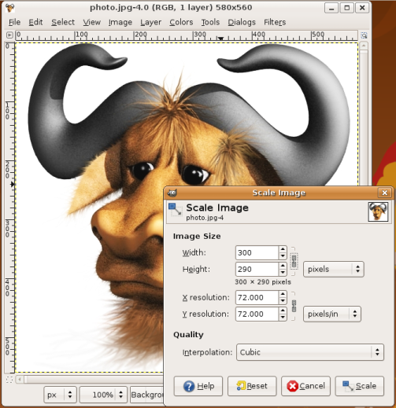

Commands enable you to do all sorts of powerful things. We will demonstrate this by looking at an everyday task you might be familiar with. If you use a digital camera, you probably have a folder full of images on your computer. Imagine you wish to resize the image profile.jpg so it is 300 pixels wide and then save it as a new image called profile_small.jpg.
Using an image editing software, the steps you need to go through might be as follows:

Using the command line, you can achieve the same result by typing the following:
convert -resize 300 profile.jpg profile_small.jpg
That is one step in the command line instead of eight steps using the image editor. Perhaps, you think that the time you spend on reading this book and studying the commands is not worth saving seven steps. But what if there were 30 images to be resized? Do you still want to open each image individually and repeat the process 30 times using the image editor? That would require a total of 240 steps. Would you rather just type one command instead and get the job done?
A single command can do the same thing whether you have 30 images, 300, or 3000. This is one of the most compelling reasons to start using the command line. You might start with a slow learning curve, but in the long run, it will save a lot of time. Even more important, learning the command line will open up interesting possibilities and fun ways of working. Let us look at some more reasons why learning the command line is a good idea.
Many people who give the command line a try are so amazed by its possibilities that they do not even want to go back to a Graphical User Interface(GUI)! Why? Well, in brief, the command line offers the following main advantages over common graphical software:
But wait, there's more! You can also store commands in text files. These text files are called scripts and can be used instead of typing a long series of commands each time. For example, if you store commands in a file called mycommand.sh, you don't have to type out the commands again. Instead, you can simply type:
mycommand.sh
In addition, you can combine commands together in simple or sophisticated ways. Further, you can schedule scripts to run at a specific time or specific date or at the occurrence of a specific event on your computer.
You can also write scripts that accept additional information from you. For example, an image resizing script might ask you to what size the images should be resized before it starts the process.
Ever tried to do anything remotely like that by using a GUI? Perhaps now you can see how working with the command line interface (CLI) starts to open a whole new world to using your computer.
The command line is also used to check the well-being of your computer. There are many commands you can use to check every facet of your computer's health, from the amount of space left on the hard drive to the temperature of the CPU. If your computer is acting poorly and you do not know what the matter is, a few commands will help you quickly determine whether it is a hardware or a software issue, and help you quickly rectify the problem.
Another interesting feature of command line interfaces that GUIs can't match is the interaction over a network. Imagine you have a computer in another room and you wish to turn it off. How do you do that? Easy right? Get up, walk to the computer, and click on the "Shutdown" button.
Well, those who know how to connect to the computer in the next room use the command line and type halt to do the same thing.
That might seem trivial. Perhaps it's actually better for you to get up off that comfy chair and expend five calories walking to the next room. However, what if the computer you wanted to shut down was in another suburb? In another city? Another country? Then, remote control of that computer might be very useful.
Shutting down a remote computer is just a start. Everything you can do on the command line you can do on the remote computer. That means you can run scripts, execute commands, edit text files, check the diagnostics, and do many other tasks. The world of the command line just got a whole lot bigger.
When you click an icon or menu item to start a program, you are actually running a command. You may require, at times, to understand what commands are you are running. For instance, if you suspect a program is running invisibly in the background and slowing your computer, you can find its command and terminate the program. GUI programs often send more error messages to the command line than to GUI dialog boxes. You can often use these command line messages to diagnose problems more precisely than you can using a graphical interface.
There has been error in communication with Booktype server. Not sure right now where is the problem.
You should refresh this page.